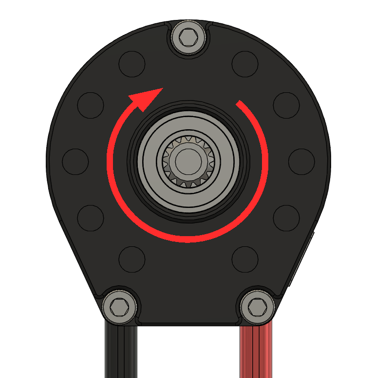
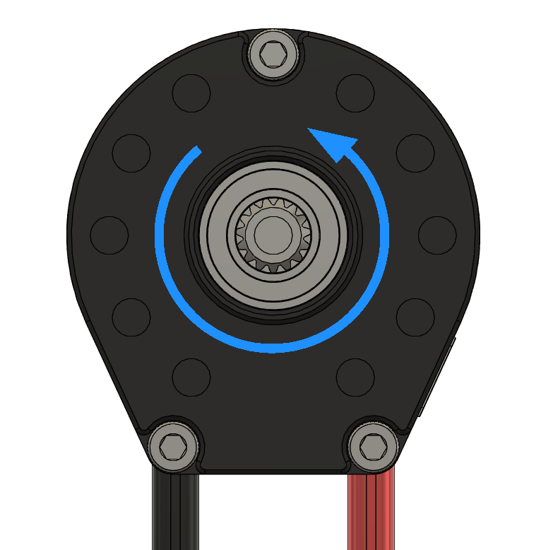

Orientation
Positive direction is defined at the output-shaft face, and set on the device.
A positive command turns the shaft one way; direction is read looking at the output-shaft face, not the rear cover.


Inverting
If a mechanism runs backwards, invert the motor rather than negating every command in code. The setting lives on the device — in SWYFT Link under Motor Output — and applies to the command and to the telemetry sign together.
Pick one convention
Choose a single robot-wide meaning for positive — for example, positive extends an elevator or drives a wheel forward — and invert each Cyclone so its positive matches. Setting direction on the device keeps robot code reading the same sign everywhere.
Confirm the shipped direction on the motor and set it deliberately during setup rather than assuming it.